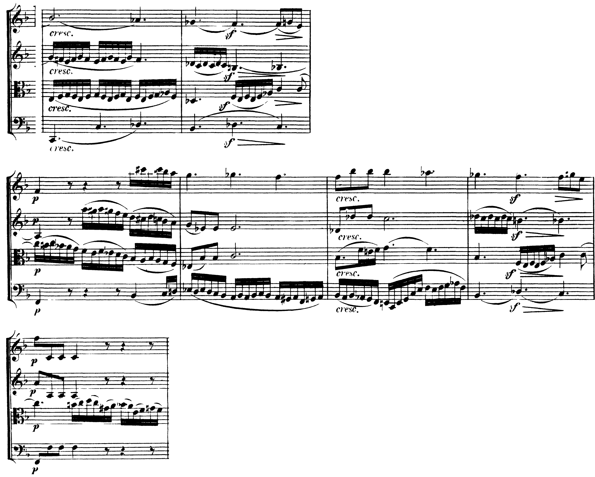

La♭–do–mi♭–fa♯ e la♭–do–mi♭–sol♭ si suonano con gli stessi tasti. Il primo va alla dominante di do, il secondo a re♭: il nome di una nota dice dove si va.
Omofoni della settima di dominante del secondo grado abbassato (ovvero la napoletana).
W. Piston, Armonia, p. 409
Lezione di due ore. Seconda ora: Officina: un basso di sedici battute con la napoletana e le seste eccedenti · ora intera di interrogazioni. I compiti per casa sono alla fine.
A11Accordi di sesta aumentata, lezione 51: la sesta tedesca, p. 133; la sesta tedesca enarmonica, p. 135.
La sesta tedesca «corrisponde enarmonicamente a una settima di dominante (fa–la–do–mi♭ nell’esempio), anche se presenta una risoluzione del tutto diversa» (D’Urso, Bertolini, p. 133). Di quale settima di dominante si tratta lo dice Piston: le seste eccedenti italiana, tedesca e svizzera sono «omofoni della settima di dominante del secondo grado abbassato (ovvero la napoletana)» (p. 409); la sesta eccedente è «l’equivalente enarmonico della dominante della napoletana» (p. 404). In do minore: la♭–do–mi♭–fa♯ è la sesta tedesca; la♭–do–mi♭–sol♭ è il V7 di re♭, cioè della napoletana. Cambia una nota sola, e cambia la sua direzione: il fa♯ sale al sol, il sol♭ scende al fa.
I soprani delle due frasi vanno in senso opposto. Nella prima il VI della b. 1 riceve una settima, sol♭, e diventa la dominante di re♭: il sol♭ scende al fa, il do sale al re♭, e la napoletana in primo rivolto arriva come una tonica momentanea. Da lì la cadenza è quella della lezione 1, re♭–do sopra la quarta e sesta. Nella seconda frase, sopra lo stesso la♭, il soprano sale fa–fa♯–sol: la stessa sonorità, scritta con il fa♯, è la sesta tedesca, e va alla quarta e sesta con il do e il mi♭ fermi. Il soprano della b. 2 scende (sol♭–fa), quello della b. 6 sale (fa♯–sol): la nota si scrive come va.
Nel maggiore la sesta tedesca nasce per scambio modale (la♭ e mi♭ presi dal minore). Se va alla quarta e sesta, il mi♭ dovrebbe salire al mi della tonica maggiore, «contrastando la tendenza risolutiva»; per questo nel repertorio, dal secondo Ottocento, il terzo grado abbassato si trova scritto come secondo alzato: la♭–do–re♯–fa♯, la sesta tedesca enarmonica, che alcuni chiamano «sesta svizzera» (D’Urso, Bertolini, p. 135).
Scrivere sol♭ e farlo salire, o scrivere fa♯ e farlo scendere al fa senza un V7 dopo: l’ortografia e la condotta si contraddicono. Cercare qui la modulazione: usare questa sonorità come perno verso un tono lontano è il lavoro dell’unità 9.

Kostka commenta proprio questo passo: la sesta tedesca della b. 33 «suona come un V7/N (un re♭7), soprattutto perché è preceduta da una napoletana», e il 4° alzato «scende cromaticamente» al 4° naturale «per fornire la settima del V7» (Tonal Harmony, p. 377). L’orecchio, dopo il sol♭ maggiore della napoletana, sente re♭–fa–la♭–si come la sua dominante; la scrittura, si♮ e non do♭, dice invece che la strada è la dominante di fa. Beethoven sceglie una terza via, quella di Piston (p. 413): il si♮ non sale al do ma scende al si♭, e la sesta eccedente si chiude sulla settima minore do–si♭ del V7.
Scrivi contralto e tenore.
Sesta tedesca e V7 della napoletana: gli stessi quattro suoni.
Fa♯ (o re♯) sale: sesta tedesca, verso la dominante. Sol♭ scende: settima di dominante, verso la napoletana.
Prima di un V7 il 4° alzato può scendere di semitono e diventarne la settima.
La lezione si chiude con il solfeggio (parlato, cantato, ritmico) e con un basso di otto battute per casa. L’ora seguente è l’officina: un basso di sedici battute con la napoletana e le seste eccedenti.
Tutta l’ora per le interrogazioni.
Tutta l’ora: quattro studenti alla lavagna, uno dopo l’altro. La classe segue le interrogazioni.
Ogni interrogazione: un esercizio alla lavagna e qualche domanda su argomenti già fatti.
Il basso dell’officina è nel Workbook.
Compiti per la prossima volta
Realizza a quattro parti le bb. 9–16 del basso.
Sul quaderno, a matita. La foto del lavoro finito va su Classroom. Nel Workbook: apri l’esercizio C4-U7-L5-01 ↗
Compiti per la prossima volta
n. 414 e n. 415 parlato · n. 416 e n. 417 cantato · n. 418 e n. 419 ritmico
Ogni pezzo a tempo, senza fermarti: il parlato a nomi, il cantato prendendo il primo suono dalla tastiera, il ritmico battendo la pulsazione.
Scrivi la linea del basso sul quaderno, in chiave di basso: otto battute in 2/2, si♭ maggiore. Il primo suono è si♭. Prima il riferimento, poi tutto due volte, ogni coppia di battute due volte, il collegamento 1–4, 3–6 e 5–8, e tutto per controllare.
Il riferimento: accordo di tonica e primo suono
Il dettato · otto battute
Le sezioni (riferimento, tutto, le coppie, il collegamento) si ascoltano una per una e si ripetono quanto serve; le fasi fanno la procedura della classe, con gli annunci e le pause, da qualunque punto.
Sul quaderno scrivi in testa la sigla C4-D-U07-L5. Si corregge all’inizio della prossima lezione.
Compiti per la prossima volta
Scrivi un contrappunto di quinta specie (il contrappunto fiorito) sopra il canto fermo, in modo dorico (finale re): dieci battute. Comincia su una consonanza perfetta, alla cadenza la sensibile sale alla finale, niente quinte e ottave consecutive.
Sul quaderno, con la sigla C4-CP-U07-L5 in testa; la foto va su Classroom.
Realizza a quattro parti il basso senza numeri: dodici battute in 4/4, la minore. Trova tu l’accordo di ogni nota (la regola dell’ottava è il punto di partenza) e scrivilo sotto; poi il soprano, poi le voci interne. Accordi che puoi usare: anche le settime secondarie (ii7) e la V7 della dominante.
Sul quaderno, con la sigla C4-BD-U07-L5 in testa; la foto va su Classroom.
Armonizza a quattro parti il canto dato: dodici battute in 4/4, si♭ maggiore. Prima le cadenze, poi il basso per intero, e solo alla fine contralto e tenore. Accordi che puoi usare: anche le settime secondarie (ii7) e la V7 della dominante.
Sul quaderno, con la sigla C4-CD-U07-L5 in testa; la foto va su Classroom.
Scritto: Il basso dell’officina, bb. 9–16 (Workbook, esercizio C4-U7-L5-01), sul quaderno; la foto va su Classroom. Solfeggio dal quaderno di lettura: parlato n. 414, 415; cantato n. 416, 417; ritmico n. 418, 419 (a tempo, senza fermarsi). Dettato C4-D-U07-L5 dalla pagina della lezione (sezioni da ascoltare, o le fasi della procedura guidata), sul quaderno con la sigla. Contrappunto di quinta specie sul canto fermo (C4-CP-U07-L5). Basso senza numeri da realizzare a quattro parti (C4-BD-U07-L5). Canto dato da armonizzare a quattro parti (C4-CD-U07-L5).